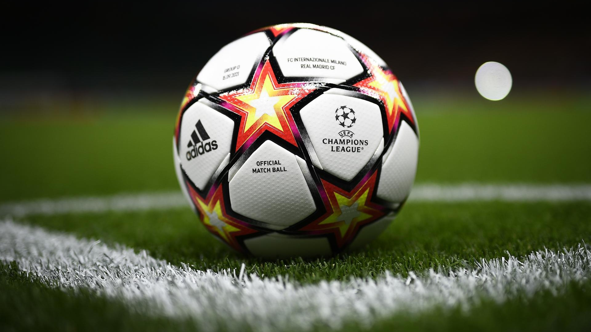
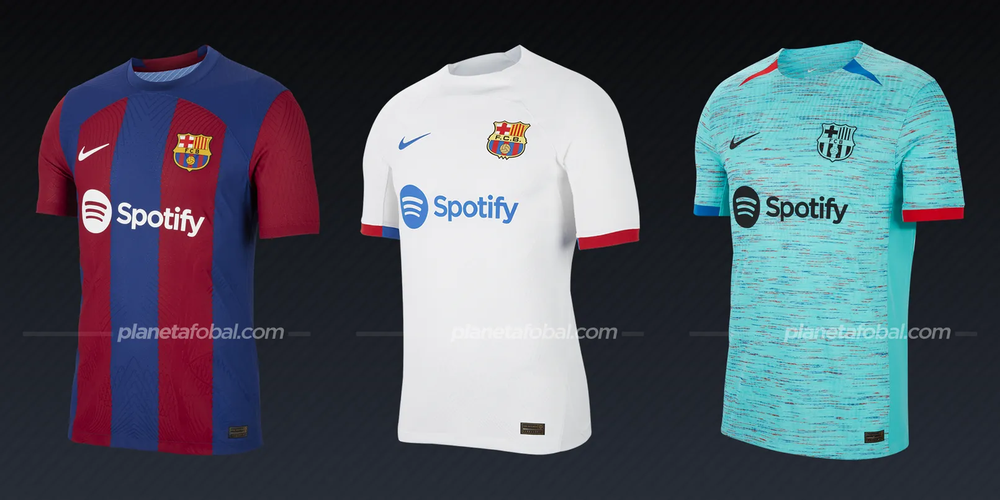

La Liga de Campeones de la UEFA 2023-24 fue la 69ª edición de la competición desde la creación de la Copa de Campeones de Europa, y la 32ª desde que se renombró a Liga de Campeones de la UEFA. Comenzó el 27 de junio de 2023 y finalizó casi un año más tarde, el 1 de junio de 2024.
Fundada el 15 de junio de 1954, su sede central se encuentra en Nyon, Suiza, y es la encargada de organizar los distintos campeonatos de naciones de Europa, además de promover, desarrollar, controlar y velar por el fútbol, sus cometidos, finanzas, reglamentos y medios del mismo, siendo la Eurocopa, oficialmente Campeonato de Europa de Naciones, su principal torneo masculino, y la Eurocopa Femenina, oficialmente Campeonato de Europa Femenino, su homólogo de mujeres. De igual modo es quien trata las diferentes cuestiones de las federaciones nacionales del territorio europeo, así como su fútbol de formación organizando también competiciones para dichas categorías conformando un total de 15 torneos entre todas las disciplinas.
Son 55 las asociaciones de fútbol que pertenecen a la UEFA. Las representadas son todas las naciones geográficamente dentro de Europa a excepción del Vaticano y Mónaco, que tampoco están representadas ni en la FIFA ni en otra Confederación Continental de Fútbol. A estas se suman Armenia, Azerbaiyán y Georgia (ubicadas en el Cáucaso, se discute su pertenencia geográfica a Europa o Asia); Israel y Chipre (geográficamente en Asia, aunque políticamente siempre asociadas a Europa); y Rusia, Turquía y Kazajistán (mayormente en Asia y con una porción menor en Europa).
Mas informacion: Luz verde a la UEFA Nations League - UEFA